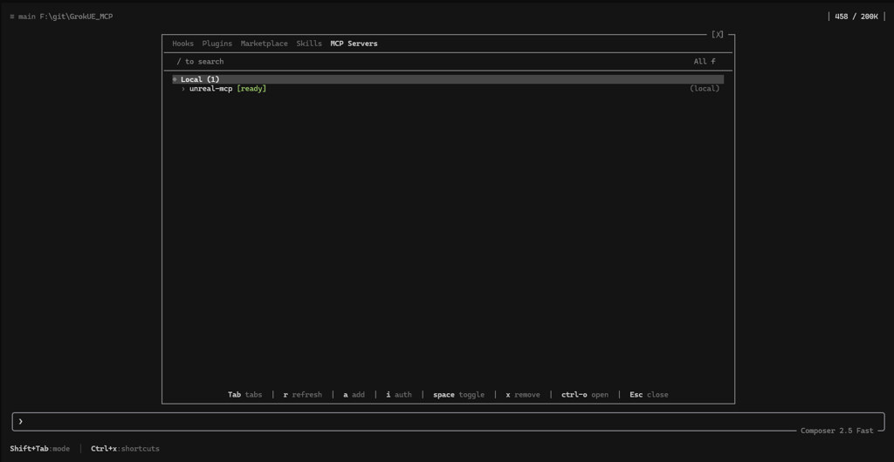
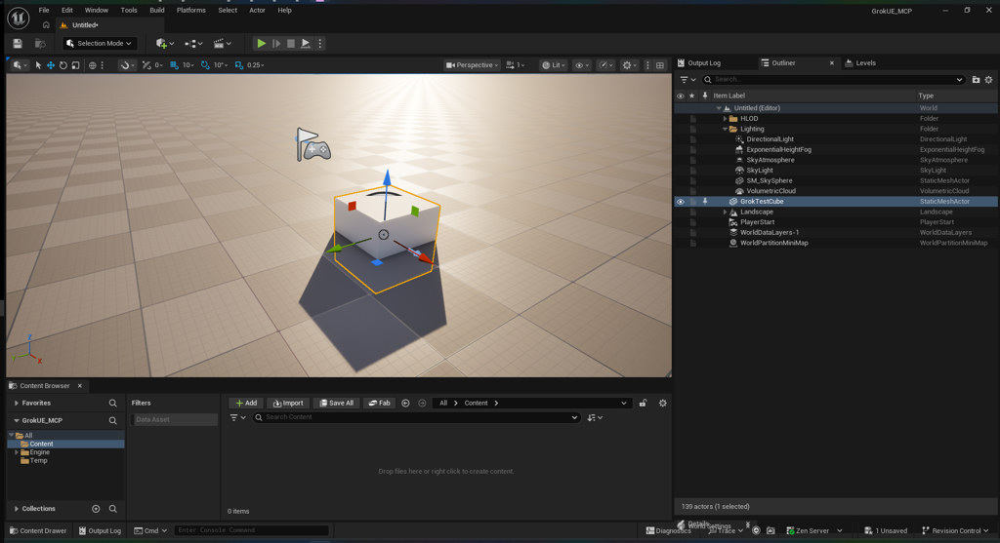

grok from the folder that has your .uproject.
SuperGrok Build · xAI agent
SuperGrok Build is xAI’s coding agent in the terminal. Unreal 5.8 already ships an MCP server inside the editor. Point Grok at that server and you can spawn, inspect, and light from a prompt — same bridge as the Office Hours video below, this time the client is Grok.
Grok is not a plugin inside Unreal. It is a local TUI you launch
from the project folder. The editor runs an HTTP MCP server on
127.0.0.1:8000. Grok talks to that server. Epic’s
client-config generator writes JSON for Claude Code, Cursor, VS
Code, Gemini, and Codex — not Grok. You add the
server yourself with grok mcp add or a project
.grok/config.toml.
grok from the folder that has your .uproject.
PS> irm https://x.ai/cli/install.ps1 | iex
PS> grok --version
PS> grokcurl -fsSL https://x.ai/cli/install.sh | bash.
8000, path /mcp). Output Log should show the server starting on port 8000.
PS> grok mcp add --transport http --scope project unreal-mcp http://127.0.0.1:8000/mcp.grok/config.toml:
[mcp_servers.unreal-mcp]
url = "http://127.0.0.1:8000/mcp"
enabled = true
startup_timeout_sec = 30
tool_timeout_sec = 120.uproject. Wait for the MCP log line. Then from that folder run grok. In the TUI: /mcps → unreal-mcp [ready]. After any editor restart, press r to re-handshake. Optional: /grok-ue-mcp if you cloned the starter project below.
Issue one ask at a time. Epic serializes tools on the game thread — stacking ten spawns in one prompt can hang.
If a cube does not appear in about a minute, the harness or the
server is the problem — not the prompt. Filter Output Log by
LogModelContextProtocol, then run
grok mcp doctor unreal-mcp.

/mcps — unreal-mcp [ready].
This is the handshake. Press r after an editor
restart.

GrokTestCube at
the origin through SceneTools. Confirm in the viewport, then
save.
Screenshots from BrokenGameplayStudios/GrokUE_MCP — a blank UE 5.8 project already wired for Grok. Epic’s plugin walkthrough is the Office Hours video below. Docs: Unreal MCP in Unreal Editor.
Office Hours · Unreal Engine 5.8
Epic’s August Education Office Hours: how the experimental Model Context Protocol plugin lets an AI agent work inside the editor the same way you do — spawn, paint, light, inspect — if you turn on the right plugins first.
MCP is not a chatbot bolted onto Unreal. It is a server that starts inside the editor. Your coding agent — SuperGrok Build in the section above, Claude Code in this session, or Cursor, VS Code, Gemini, or Codex — talks to that server over local HTTP. The agent can then do editor work: right-click, drag from the Content Browser, spawn actors, set lights, make materials. 5.8 already ships the plugin. You bring the agent.
The Unreal MCP plugin itself has no tools. It is only the bridge. Tools come from toolsets. Skip those and the agent can connect and still do nothing. Enable three plugins, not the two the docs often mention: Unreal MCP, All Toolsets, and Editor Tool Set. Restart. Only after that restart does Model Context Protocol show up in Editor Preferences. Check Auto Start Server so you are not typing a console command every launch.
ModelContextProtocol.StartServer, then ModelContextProtocol.GenerateClientConfig ClaudeCode (or All). Launch the agent from the project root so it finds .mcp.json.
About forty-five minutes of demo, then live Q&A. Third-person template, project named MCP, Blueprint defaults. After plugins and auto-start, the Output Log should say the server is transmitting to your LLM provider — that line is the proof it started. GenerateClientConfig writes the JSON the agent needs. If you are not sure which client, generate All.
Q&A: Fortnite / UEFN is not this plugin; there is a separate Python path. Context size is a known issue — Epic exposed more than many models can hold. State of Unreal has the bigger living-room-to-city MCP demo. Next office hours may hit MetaHuman, animation, Sequencer.
For this studio: PCG world-building still comes first. MCP is the other 5.8 door — talk to the editor instead of clicking every spawn. Experimental, local-only, bring your own agent.
World-building
Want cities, roads, huge terrain, and planets? PCG Primitives + Mesh Terrain in 5.8 is the closest first-party answer, and WorldBLD is the closest third-party kit system with confirmed 5.8 support.
Epic’s PCG City Generator sample in Unreal Engine 5.8 — cities and roads from PCG Primitives, the first-party start in the recommendation.
First priority · Unreal Engine 5.8
PCG world-building comes first. The idea is simple: you write rules, the engine fills the world, and in 5.8 you can still move pieces by hand without breaking those rules. You do not start in Houdini. You start in Edit → Plugins.
Currently learning
Honest beginner track. I already know topology, UVs, and PBR from Blender. Unreal Engine is the new language I am learning to speak.

Games
Started learning Blueprints in detail. This recording explains the fundamentals of coding with Blueprints in Unreal Engine 5.8.
1:19 · 5 Sep 2026 · UE 5.8 · Blueprints · BPLearn
Recorded in the Unreal Editor on 5 September 2026: Content / BPLearn, a Blueprint Class, Event BeginPlay, a Timer integer, compile.
Not a game — an explanation of how Blueprints code. The Games page also has a step-by-step on Epic’s PCG world-building stack in 5.8, the top-down strategy/shooter, and First Game in Unreal.
Rust
I am writing a polygonal 3D modeler in Rust system-level code — mesh topology, GPU viewport, tools, and undo I own. Not a plugin, and not a script on top of someone else's editor. oTTeCAD is that workbench, compiled to WebAssembly so it runs on this site. Above the editor: a Renzora-shaped engine page — Bevy 0.19, get the editor, then how to build one.
First worlds
Lighting, materials, and blockouts I still use to learn Unreal Engine. The top-down strategy/shooter is the new loop; these are the atmosphere notes around it.

One lamp, fog, and wet bark. Mood before mechanics.

Gray volumes in real pines — scale and path first.

Moss, needles, wet stone — PBR from a 3D art habit.

A traveler on a misty mountain ridge. Camera, silhouette, horizon.

About
I am a 3D artist moving into game development. For years I built hard-surface and organic models, clean topology, and game-ready assets. Now I am a beginner in Unreal Engine — learning how those assets live inside a real game.
Background includes Blender, PBR, shaders, and earlier experiments in Godot and Rust. The studio name stays. The work shifts from stills to playable worlds.
Contact
Open to conversations, feedback, and small collabs. No form spam — pick a channel.